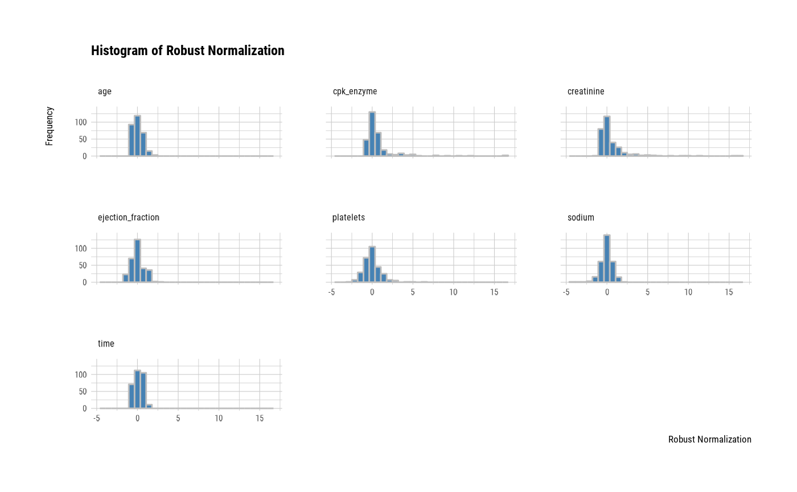
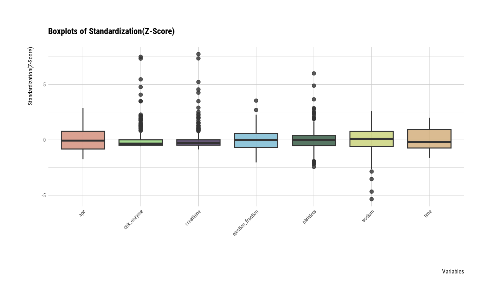
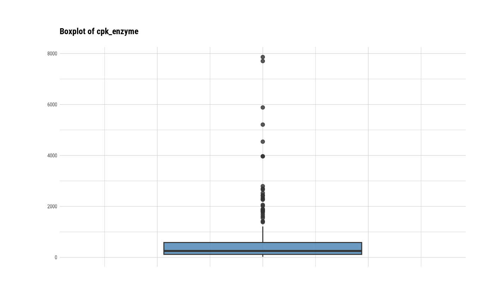
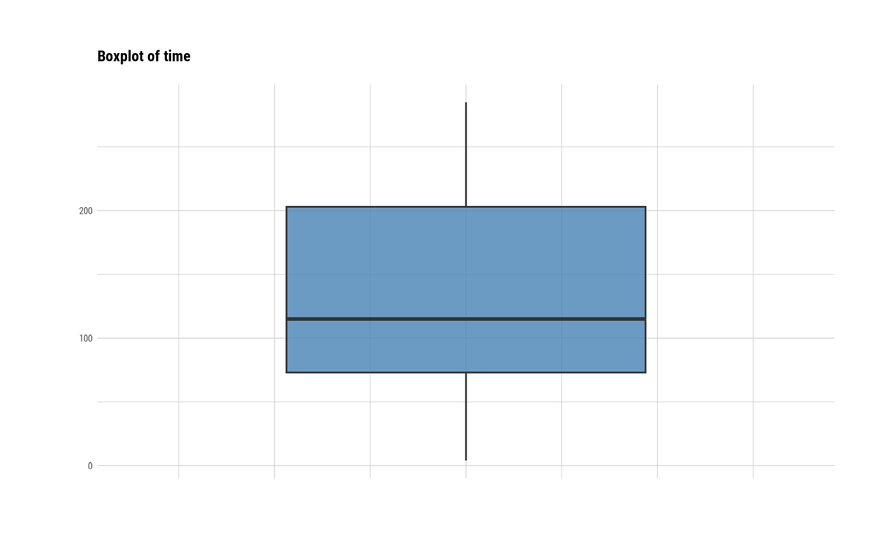
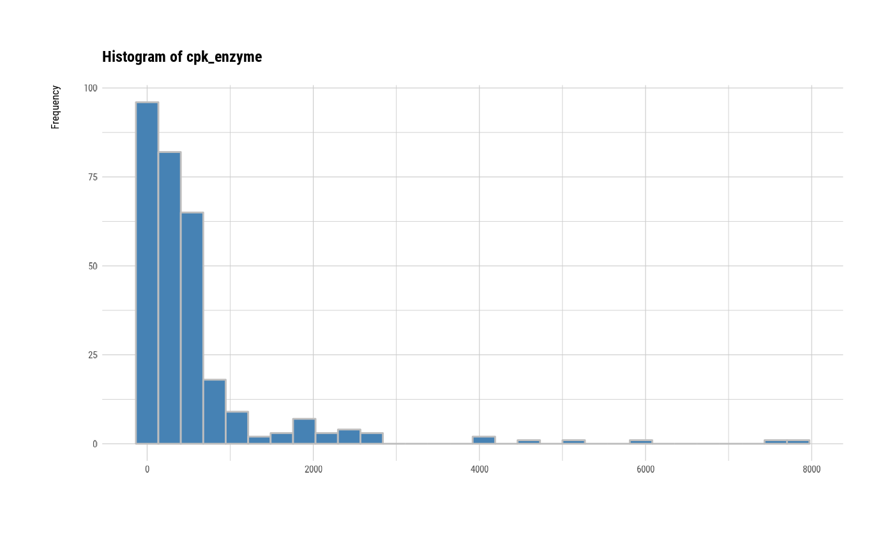
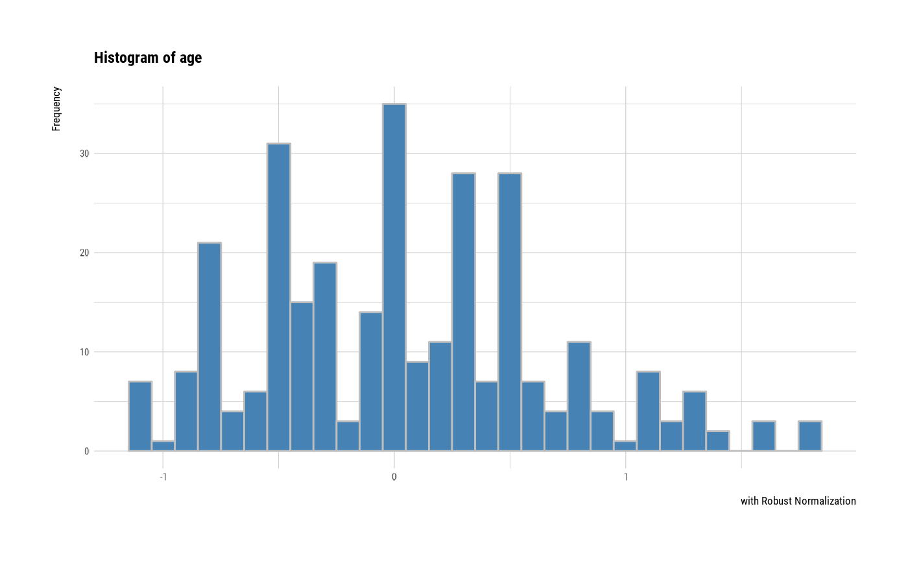
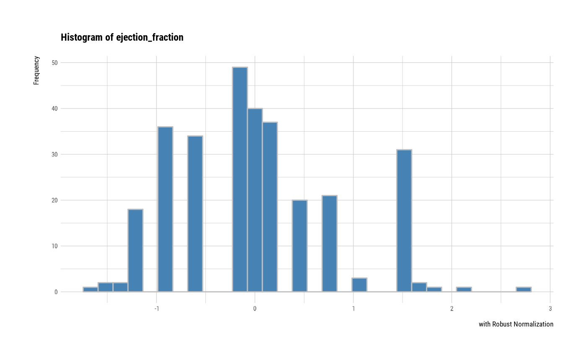

The univar_numeric() calculates statistic of numerical variables that is frequency table
univar_numeric(.data, ...) # S3 method for data.frame univar_numeric(.data, ...)
Arguments
| .data | a data.frame or a |
|---|---|
| ... | one or more unquoted expressions separated by commas. You can treat variable names like they are positions. Positive values select variables; negative values to drop variables. These arguments are automatically quoted and evaluated in a context where column names represent column positions. They support unquoting and splicing. |
Value
An object of the class as individual variables based list. A component named "statistics" is a tibble object with the following statistics.:
variable : factor. The level of the variable. 'variable' is the name of the variable.
n : number of observations excluding missing values
na : number of missing values
mean : arithmetic average
sd : standard deviation
se_mean : standrd error mean. sd/sqrt(n)
IQR : interquartile range (Q3-Q1)
skewness : skewness
kurtosis : kurtosis
median : median. 50% percentile
Details
univar_numeric() calculates the popular statistics of numerical variables. If a specific variable name is not specified, statistics for all categorical numerical included in the data are calculated. The statistics obtained by univar_numeric() are part of those obtained by describe(). Therefore, it is recommended to use describe() to simply calculate statistics. However, if you want to visualize the distribution of individual variables, you should use univar_numeric().
Attributes of return object
Attributes of compare_category class is as follows.
raw : a data.frame or a
tbl_df. Data containing variables to be compared. Save it for visualization with plot.univar_numeric().variables : character. List of variables selected for calculate statistics.
See also
Examples
# Generate data for the example carseats <- ISLR::Carseats carseats[sample(seq(NROW(carseats)), 20), "Income"] <- NA carseats[sample(seq(NROW(carseats)), 5), "Urban"] <- NA # Calculates the all categorical variables all_var <- univar_numeric(carseats) # Print univar_numeric class object all_var#> $statistics #> # A tibble: 8 x 10 #> variable n na mean sd se_mean IQR skewness kurtosis median #> <chr> <int> <int> <dbl> <dbl> <dbl> <dbl> <dbl> <dbl> <dbl> #> 1 Sales 400 0 7.50 2.82 0.141 3.93 0.186 -0.0809 7.49 #> 2 CompPrice 400 0 125. 15.3 0.767 20 -0.0428 0.0417 125 #> 3 Income 380 20 68.8 28.0 1.44 48.5 0.0480 -1.11 69 #> 4 Advertising 400 0 6.64 6.65 0.333 12 0.640 -0.545 5 #> 5 Population 400 0 265. 147. 7.37 260. -0.0512 -1.20 272 #> 6 Price 400 0 116. 23.7 1.18 31 -0.125 0.452 117 #> 7 Age 400 0 53.3 16.2 0.810 26.2 -0.0772 -1.13 54.5 #> 8 Education 400 0 13.9 2.62 0.131 4 0.0440 -1.30 14 #># Calculates the Price, CompPrice variable univar_numeric(carseats, Price, CompPrice)#> $statistics #> # A tibble: 2 x 10 #> variable n na mean sd se_mean IQR skewness kurtosis median #> <chr> <int> <int> <dbl> <dbl> <dbl> <dbl> <dbl> <dbl> <dbl> #> 1 Price 400 0 116. 23.7 1.18 31 -0.125 0.452 117 #> 2 CompPrice 400 0 125. 15.3 0.767 20 -0.0428 0.0417 125 #># Summary the all case : Return a invisible copy of an object. stat <- summary(all_var) # Summary by returned object stat#> # A tibble: 8 x 8 #> variable mean sd se_mean IQR skewness kurtosis median #> <chr> <dbl> <dbl> <dbl> <dbl> <dbl> <dbl> <dbl> #> 1 Sales 0.00161 0.719 0.0359 1 0.186 -0.0809 0 #> 2 CompPrice -0.00125 0.767 0.0383 1 -0.0428 0.0417 0 #> 3 Income -0.00309 0.577 0.0296 1 0.0480 -1.11 0 #> 4 Advertising 0.136 0.554 0.0277 1 0.640 -0.545 0 #> 5 Population -0.0276 0.568 0.0284 1 -0.0512 -1.20 0 #> 6 Price -0.0389 0.764 0.0382 1 -0.125 0.452 0 #> 7 Age -0.0449 0.617 0.0309 1 -0.0772 -1.13 0 #> 8 Education -0.025 0.655 0.0328 1 0.0440 -1.30 0#> # A tibble: 8 x 8 #> variable mean sd se_mean IQR skewness kurtosis median #> <chr> <dbl> <dbl> <dbl> <dbl> <dbl> <dbl> <dbl> #> 1 Sales 0.461 0.174 0.00868 0.242 0.186 -0.0809 0.460 #> 2 CompPrice 0.490 0.156 0.00782 0.204 -0.0428 0.0417 0.490 #> 3 Income 0.483 0.283 0.0145 0.490 0.0480 -1.11 0.485 #> 4 Advertising 0.229 0.229 0.0115 0.414 0.640 -0.545 0.172 #> 5 Population 0.511 0.295 0.0148 0.520 -0.0512 -1.20 0.525 #> 6 Price 0.550 0.142 0.00709 0.186 -0.125 0.452 0.557 #> 7 Age 0.515 0.295 0.0147 0.477 -0.0772 -1.13 0.536 #> 8 Education 0.488 0.328 0.0164 0.5 0.0440 -1.30 0.5# Statistics of numerical variables standardized by Z-score method summary(all_var, stand = "zscore")#> # A tibble: 8 x 8 #> variable mean sd se_mean IQR skewness kurtosis median #> <chr> <dbl> <dbl> <dbl> <dbl> <dbl> <dbl> <dbl> #> 1 Sales 1.15e-16 1.00 0.0500 1.39 0.186 -0.0809 -0.00224 #> 2 CompPrice 3.67e-16 1 0.05 1.30 -0.0428 0.0417 0.00163 #> 3 Income 2.01e-16 1.00 0.0513 1.73 0.0480 -1.11 0.00536 #> 4 Advertising 2.03e-17 1 0.05 1.80 0.640 -0.545 -0.246 #> 5 Population 1.67e-16 1.00 0.0500 1.76 -0.0512 -1.20 0.0486 #> 6 Price -7.39e-17 1 0.05 1.31 -0.125 0.452 0.0509 #> 7 Age 1.12e-16 1.00 0.0500 1.62 -0.0772 -1.13 0.0727 #> 8 Education -1.38e-16 1 0.05 1.53 0.0440 -1.30 0.0382# one plot with all standardized variables by Z-score method plot(all_var, viz = "boxplot", stand = "zscore")# individual histogram by robust standardized variable plot(all_var, indiv = TRUE, "hist", stand = "robust")#> Hit <Return> to see next plot:#> Hit <Return> to see next plot:#> Hit <Return> to see next plot:#> Hit <Return> to see next plot:#> Hit <Return> to see next plot:#> Hit <Return> to see next plot:#> Hit <Return> to see next plot:#> Hit <Return> to see next plot: